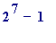
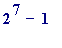

> # 1_mersen.mws
This entire document has been produced using 'MAPLE', the 'Computer Algebra Software' which is installed on computers in St. Patrick's computer laboratory. Anyone who is interested in finding out about how to obtain MAPLE is welcome to ask me about it.
PUBLIC LECTURE. WED. 23rd. OCTOBER 1996. ST. PATRICK'S COLLEGE, DRUMCONDRA, DUBLIN 9.
LECTURE TITLE: THE RECENTLY DISCOVERED WORLD RECORD PRIME NUMBER.
LECTURER: JOHN COSGRAVE, MATHEMATICS DEPARTMENT, ST. PATRICK'S COLLEGE, DRUMCONDRA, DUBLIN 9, IRELAND.
INTRODUCTION. On 3rd. September 1996 Cray Research (Wisconsin, USA) announced that one of their computers had just found a new world record prime number:
 . That is "2 to the power of 1,257,787 minus 1". It is obtained by taking one million, two hundred and fifty seven thousand, seven hundred and eighty seven 2's, multiplying all those 2's together, and then subtracting 1. It is a truly enormous number, with 378,632 digits, and would take 4 days, 9 hours, 10 minutes and 32 seconds to read at one digit per second. [Anyone with access to the World Wide Web may consult Cray's Home Page and read an immense amount of material relating to this. Their address is: http://www.cray.com ]
. That is "2 to the power of 1,257,787 minus 1". It is obtained by taking one million, two hundred and fifty seven thousand, seven hundred and eighty seven 2's, multiplying all those 2's together, and then subtracting 1. It is a truly enormous number, with 378,632 digits, and would take 4 days, 9 hours, 10 minutes and 32 seconds to read at one digit per second. [Anyone with access to the World Wide Web may consult Cray's Home Page and read an immense amount of material relating to this. Their address is: http://www.cray.com ]
AIMS of this lecture:
1. The above number is certainly not 'any old number'; it has got some structure to it, a certain shape. So you probably want to know
WHERE that structure 'came from'. I attempt to explain that.
2. You probably want to know HOW the above number was shown to be a prime. I also attempt to explain that.
PLAN of lecture:
1. Some consideration of the size of numbers like the above number.
2. The early historical background. Euclid (~300 B.C.) and 'perfect' numbers.
3. A fleeting glimpse at period between Euclid and Lucas.
4. Lucas (1842-1891), his record prime, the 'Lucas-lehmer' test, and the
modern era.
1. Some consideration of the size of
To calculate its value one would have to take 1,257,787 two's, multiply them all together, and then subtract 1. It is an enormous number, having 378,632 digits. I have used MAPLE V - RELEASE 4 to calculate the above prime, and have printed it out on A4 paper (please don't tell the College Bursar); it fills about 107 and 1/2 pages, with about 3,500 digits on each page. [Added afterwards: I brought the printed text of the prime into my lecture, and passed it around the audience so that they could get a physical feel for the size of the prime.]
The following is intended only to give SOME idea of the size of the above number.
> 2^2;

> 2^3;
> 2^31;
> 2^31 - 1; # Euler, 1772 A.D. Largest known until 1876 A.D.
> 2^127;
> 2^127 - 1; # Lucas, 1876 A.D. Largest known until 1952 A.D.
You see how powers of 2 increase in size very quickly as one increases to value of the 'exponent' (the power to which 2 is being 'raised', as we say).
Let's just look at one more power of 2, to get a feeling for its size:
> 2^1000; # so, this is 1,000 two's multiplied together:
2. The early historical background Euclid, ~300 B.C., 'perfect' numbers) SOME TERMINOLOGY
First I need to establish the meanings of the following fundamental terms:
1. factor,
2. prime number,
3. composite number,
4. abundant number,
5. deficient number,
6. perfect number,
and I will do so via simple examples.
CONVENTION. By WHOLE numbers I will mean the numbers: 1, 2, 3, 4, 5, 6, 7, 8, 9, 10, 11, 12, 13, ...
15 = 5 + 5 + 5, and we say that 15 is 5 'times' 3, and say that 5 is a FACTOR of 15, MEANING that 15 is obtainable from 5 by multiplying 5 by SOME whole number (3).
91 = 7 + ... + 7 + 7, and we say that 91 is 7 'times' 13, and say that 7 is a FACTOR of 91, MEANING that 91 is obtainable from 7 by multiplying 7
by SOME whole number (13).
DEFINITION of 'factor'. If n is a whole number, then the whole number ' a ' is called a 'factor' of n , if n is equal to a times b , for some whole number ''.
Examples: 5 is a factor of 15, 7 is a factorof 91, 6 is a factor of 30, 13 is a factor of 91, 1 is a factorof 9, 25 is a factor of 25, etc, etc.
However 3 is NOT a factor of 35 in the sense that 35 is NOT 3 times ANY whole number. (35 is between 33 and 36; the former being eleven 3's and the latter is twelve 3's).
LISTING THE FIRST SEVERAL WHOLE NUMBERS, THE FACTORS OF THOSE NUMBERS, AND SOME RANDOMLY CHOSEN LARGER ONES.
1 has only one factor: 1
2 has two factors: 1 and 2
3 has two factors: 1 and 3
4 has three factors: 1, 2 and 4
5 has two factors: 1 and 5
6 has four factors: 1, 2, 3 and 6
7 has two factors: 1 and 7
8 has four factors: 1, 2, 4 and 8
. .
20 has two factors: 1, 2, 4, 5, 10, 20
21 has four factors: 1, 3, 7 and 21
22 has four factors: 1, 2, 11 and 22
23 has two factors: 1 and 23
. .
225 has nine factors: 1, 3, 5, 9, 15, 25, 45, 75 and 225
. .
1007 has two factors: 1 and 1007
1008 has thirty factors: 1, 2, 3, 4, 6, ... , 336, 504 and 1008
etc., etc.
OBSERVATIONS
There is just one whole number with ONLY ONE factor: 1
There are SOME whole numbers each of which has EXACTLY TWO factors: 2, 3, 5, 7, 11, 13, 17, 19, 23, ... . These are the 'PRIME' numbers.
There are SOME whole numbers each of which has MORE than TWO factors: 4, 6, 8, 9, 10, 12, 14, ... . These are the 'COMPOSITE' numbers.
An early CLASSIFICATION of whole numbers.
If you add together ALL the factors of 12 then - of course - you get a number that is AUTOMATICALLY greater than 12.
What happens though if you only add together the factors of 12, but EXCLUDING 12 itself?
You get 1+2+3+4+6, which comes to 16, which is greater than 12.
That sort of thing doesn't always happen. For example if you choose the number 15 - which has factors 1, 3, 5 and 15 - then the sum of all of the
factors of 15, apart from 15, comes to 9, which is less than 15.
Numbers that behave LIKE 12 are called ABUNDANT, and
numbers that behave LIKE 15 are called DEFICIENT.
A whole number is said to be ABUNDANT if the sum of all of its factors - excluding itself - is GREATER than itself.
A whole number is said to be DEFICIENT if the sum of all of its factors - excluding itself - is LESS than itself.
By hand you can start a systematic lists of both types, simply by testing each number in turn, find its factors, add all of them - except the number
itself - and see what it comes to:
ABUNDANT: 12, 18, 20, 24, 30, 36, 40, ...
DEFICIENT: 1, 2, 3, 4, 5, 7, 8, 9, 10, 11, 13, 14, 15, ...
Here is a simple 'programme' written in MAPLE's language which will calculate ALL abundant numbers up to any chosen limit:
> with(numtheory): # needed to use the sigma command
Warning, new definition for order
>
abundant :=proc(n) local S, k;
S:={ }:
for k to n do
if sigma(k) > 2*k
then S:=S union {k} else S:=S
fi od; end:
[Added afterwards: I choose to have the output come out horizontally, rather than vertically. Otherwise I could have dispensed with S etc.]
And so - for example - to find all abundant numbers up as far as 100, all one has to do is:
> abundant(100);
And here is a slight modification of the above which will enable us to calculate all deficient numbers up to any limit:
>
deficient :=proc(n) local S, k;
S:={ }:
for k to n do
if sigma(k) < 2*k
then S:=S union {k} else S:=S
fi od; end:
And so - for example - to find all deficient numbers up as far as 40, all one has to do is:
> deficient(100);
As you see there are many abundant and deficient numbers.
Now I would like to make more slight alterations to both of the above programmes that will allow me to actually COUNT how many abundant and deficient numbers there are up to any given limit:
>
abundant_or_deficient:=proc(n) local count, k;
count:=0:
for k to n do
if sigma(k) < 2*k or sigma(k) > 2*k then count:=count+1
else count:=count
fi od;
lprint(`There are`, count, `abundant and deficient numbers up as far as`, n);
end:
There are 20 whole numbers up as far as 20. Let's see how many of them are either abundant or deficient:
> abundant_or_deficient(20);
There are 19 abundant and deficient numbers up as far as 20
And so there is - as it were - one 'missing' number, namely the number 6. The factors of 6 are 1, 2, 3 and 6, and their sum - with 6 itself excluded -
comes to 6. Let's do the same sort of thing, but now we will test the first 400 whole numbers:
> abundant_or_deficient(400);
There are 398 abundant and deficient numbers up as far as 400
JUST 2 MISSING ONES!!! The extra missing one is 28.
The factors of 28 are 1, 2, 4, 7, 14 and 28, and their sum - with 28 itself excluded - comes to 28. Numbers LIKE 6 and 28 - being so RARE - were given a special place in the realm of the whole numbers by Euclid. They were called PERFECT numbers.
>
perfect :=proc(n) local k;
for k to n do
if sigma(k) = 2*k
then lprint(k, `is PERFECT`)
fi od end:
> perfect(100);
6 is PERFECT
28 is PERFECT
> perfect(1000);
6 is PERFECT
28 is PERFECT
496 is PERFECT
Euclid's beautiful observation was that these numbers were related by a PATTERN which anyone would quickly come to suspect:
>
the_factors_of:=proc(n) local S, k;
S:={ }:
for k to isqrt(n) do
if irem(n, k)=0 then S:=S union {k} union {n/k}
else S:=S
fi od end:
[Added afterwards: I know that this is a very poor programme, and I could have resorted to using MAPLE's own in-built command 'divisors'. I choose not to do that since I make a distinction with my own students between 'factor' and 'divisor', and since I was giving these notes to my own students I wanted to be consistent in my use of terms.]
> the_factors_of(6);
> the_factors_of(28);

> the_factors_of(496);
Looking at the last of those - 496 - its factors, when written in increasing order: 1, 2, 4, 8, 16, 31, 62, 124, 248, 496,
can be rearranged in what one might call factor-pairs as follows: (1, 496), (2, 248), (4, 124), (8, 62) and (16, 31),
and the product of the members of each pair is equal to 496, and it should be clear that as the value of the first member of each pair is increased there
is a decrease in the value of the second member of the pair. The final pair is especially significant, as we will see.
A mathematically sensitive eye (and Euclid had the great good fortune to have been the one who first made the following observation) will
immediately notice something about the small early factors of 496 (1, 2, 4, ... ): they are ALL powers of 2.
The last of them is 16 ( 2 to the power of 4), and the number 496 is the PRODUCT of that number and the VERY NEXT factor of 496 after the factor 16. In summary, Euclid's great discovery was that if one had a prime that was of the SPECIAL FORM: (
 )
)
then from that prime one could create a PERFECT number by forming the related number:
![[Maple Math]](images/1_MERSEN19.gif)
3. A fleeting glimpse at the period between Euclid and Lucas (1842-1891).
With Euclid's discovery the QUESTION then became: For which whole numbers
n
is the number (
 ) prime?
) prime?
If one experiments one will find that:
 is a PRIME number when n = 2, 3, 5, 7, ... and
is a PRIME number when n = 2, 3, 5, 7, ... and
 is a COMPOSITE number when n = 4, 6, 8, 9, 10, ...
is a COMPOSITE number when n = 4, 6, 8, 9, 10, ...
HISTORICAL FACT: Until about the year 1536 A.D. it was WRONGLY BELIEVED that (
 ) is a prime whenever n is itself a prime.
) is a prime whenever n is itself a prime.
In 1536 A.D. it was noted that this is not true: when n = 11, then (
 ) has value 2047, and since 2047 = 23*89, then (
) is NOT a prime.
) has value 2047, and since 2047 = 23*89, then (
) is NOT a prime.
So a new QUESTION then arose: WHICH of the numbers (
 ) are prime, and which aren't?
) are prime, and which aren't?
Well, in the case when the 'exponent' itself is composite (as it is - e.g. - in the ( ) case) it is very straightforward. It is easy to give a proof that:
If
n
itself is COMPOSITE then (
 ) is ALSO COMPOSITE.
) is ALSO COMPOSITE.
MORAL: If you are looking for values of
n
for which (
 ) is PRIME, then you must search for such values ONLY amongst the primes themselves. So, we need only restrict our search to testing these numbers:
) is PRIME, then you must search for such values ONLY amongst the primes themselves. So, we need only restrict our search to testing these numbers:
 ,
,
,
,
 ,

,
,

,
 ,
,
 ,
, ETC, ETC.
,
, ETC, ETC.
HOW can one tell if any given one of those numbers is prime or not?
From the time of Eratosthenes (?276B.C. - ?194 B.C.) up to Euler (1707- 1783 A.D.) there was only one way known to test ANY whole number to see
if it was a prime or not. It was no more than a simple 'trial-and-error' method, and only involved carrying out a systematic attempt at finding a possible factor of the given whole number. Starting with the number-to-be-tested, one just did a succession of very routine computations, at the end of which one was able to say: "this number is prime" or "this number is composite". The method had the benefit of "working", but it had a CRITICAL drawback: it was FAR TOO SLOW.
Euler's record prime of 1772 A.D. (Euler, 1707-1783).
Historically the breakthrough came with some work of Euler, the greatest mathematician of the 18th. century. For the special numbers (
 ) -
) -
with ' p ' being a prime - Euler proved that these could be tested more quickly than 'ordinary' whole numbers which didn't have special structure. But even with this improvement, the largest number of the above type that Euler (in 1772, then 65 years of age, and sightless) was able to PROVE the primality of was the ten digit number:
> 2^31 - 1;

When Euler established the primality of ( ) it was said (not by him) that this would be the largest prime ever discovered!!!
4. Lucas (1842-1891), his record prime, the 'Lucas-lehmer' test, and the modern era.
The recently discovered record prime, and all others of the same type, was discovered by using a profound new idea introduced into Mathematics by
the French mathematician Francois Lucas (1842 - 1891). In 1876 he established that the 39-digit number (
 ) was prime, and was able to do so by making a remarkable discovery that marked a revolution in 'Number Theory'.
) was prime, and was able to do so by making a remarkable discovery that marked a revolution in 'Number Theory'.
Prior to Lucas the way in which a number was shown to be prime was to show that it did NOT have any factor other than 1 and itself. Lucas discovered that the SPECIAL numbers (
 ) - when
p
is an odd prime - could be proved to be prime by showing that (
) - when
p
is an odd prime - could be proved to be prime by showing that (
 ) IS a factor of one VERY SPECIAL NUMBER, whose value DEPENDS on the number
p
itself.
) IS a factor of one VERY SPECIAL NUMBER, whose value DEPENDS on the number
p
itself.
LUCAS' GREAT DISCOVERY (in LEHMER's MODIFIED FORM)
Let p be ANY odd prime number (3, 5, 7, 11, 13, ... ). Next, create the following sequence of numbers:
4, 14, 194, 37634, 1416317954, 2005956546822746114, 4023861667741036022825635656102100994, ... ... ... ... ... ... ...
in which each term - after the first one (4) - is obtained from the previous one by 'squaring' it (that is, multiplying it by itself) and subtracting 2 (so, the '14' is ; the '194' is ; ... ). THEN:
is a PRIME if it IS a factor of the (
 )-th term of the above sequence,
)-th term of the above sequence,
and
 is COMPOSITE if it ISN'T a factor of the (
)-th term of the above sequence.
is COMPOSITE if it ISN'T a factor of the (
)-th term of the above sequence.
A small example to show what is involved: Take
; then
 = 31.
= 31.
Then = 4, and so we need the fourth term of the above sequence. The fourth term is 37634, and so we only need to see IF 31 is a factor of 37634. Performing a simple calculation we find: 37634 = 31*1214, and so 31 IS a factor of the fourth term of the above sequence, and so it is PRIME.
[One isn't suggesting that one has needed this in order to establish that 31 is prime. The Eratosthenes approach would establish it almost instantly. ]
Another example:
Take ; then = 127.
Then = 6, and so we need the sixth term of the above sequence. The sixth term is 2005956546822746114, and so we only (!!) need to see IF 127 is a factor of 2005956546822746114. Performing a calculation we find: 2005956546822746114 = 127*15794933439549182, and so 127 IS a factor of the sixth term of the above sequence, and so 127 is PRIME.
[ Once again, one isn't suggesting that one has needed this in order to establish that 127 is prime. The Eratosthenes approach would establish
it more quickly. ]
Of course the terms of the above sequence are getting INCREDIBLY LARGE. The following is only intended to give you some idea as to how quickly they start to have large values:
>
show_L_L_sequence:=proc(n) local a, k, m;
a[1]:=4:
for k from 2 to n do
a[k]:=a[k-1]^2 - 2
od;
seq(lprint(a[m], `is the`, m, `-th term of the L_L sequence`), m=1..n);
end:
> show_L_L_sequence(7);
4 is the 1 -th term of the L_L sequence
14 is the 2 -th term of the L_L sequence
194 is the 3 -th term of the L_L sequence
37634 is the 4 -th term of the L_L sequence
1416317954 is the 5 -th term of the L_L sequence
2005956546822746114 is the 6 -th term of the L_L sequence
4023861667741036022825635656102100994 is the 7 -th term of the L_L sequence
Or, here is a simple programme for calculating the number of digits that each term of the Lucas-Lehmer sequence has:
>
digits_in_L_L_numbers:=proc(n) local a, k, m;
a[1]:=4:
for k from 2 to n do
a[k]:=a[k-1]^2 - 2
od;
seq(lprint(`the`, m, `-th term of the L_L sequence has`,
length(a[m]), `digits`), m=1..n);
end:
> digits_in_L_L_numbers(16);
the 1 -th term of the L_L sequence has 1 digits
the 2 -th term of the L_L sequence has 2 digits
the 3 -th term of the L_L sequence has 3 digits
the 4 -th term of the L_L sequence has 5 digits
the 5 -th term of the L_L sequence has 10 digits
the 6 -th term of the L_L sequence has 19 digits
the 7 -th term of the L_L sequence has 37 digits
the 8 -th term of the L_L sequence has 74 digits
the 9 -th term of the L_L sequence has 147 digits
the 10 -th term of the L_L sequence has 293 digits
the 11 -th term of the L_L sequence has 586 digits
the 12 -th term of the L_L sequence has 1172 digits
the 13 -th term of the L_L sequence has 2343 digits
the 14 -th term of the L_L sequence has 4686 digits
the 15 -th term of the L_L sequence has 9371 digits
the 16 -th term of the L_L sequence has 18742 digits
To tackle the question of deciding on the primality of (
 ) by using this test would mean that one would need the 126-th term of the Lucas-Lehmer sequence. The number of digits in THAT number is STUPENDOUSLY LARGE. As you can see - and it is easy to explain why it happens - the number of digits doubles (almost) every time you move on from one term of the Lucas-Lehmer sequence to the next. Thus the number of digits that the 126-th. term would have would be APPROXIMATELY:
) by using this test would mean that one would need the 126-th term of the Lucas-Lehmer sequence. The number of digits in THAT number is STUPENDOUSLY LARGE. As you can see - and it is easy to explain why it happens - the number of digits doubles (almost) every time you move on from one term of the Lucas-Lehmer sequence to the next. Thus the number of digits that the 126-th. term would have would be APPROXIMATELY:
> 8742*2^110; # doubling the '18742', one hundred and ten times
Even just to write out a number having that number of digits - at, let us say, one digit per second - would take over 770 thousand, million, million, million, million years. [ I leave it as a simple arithmetical exercise for you to check on that, at 3600 seconds per hour, 24 hours per day, and 365 days per year. ] And even if one wrote really quickly - at, let us say, one million digits per second - it would still take over 770 thousand, million, million, million years. [ Compare that with the age of the Universe, which is variously estimated at between 10 billion and 20 billion years. ]
You are (I hope) surely wondering:
HOW did Lucas establish the primality of ( ) when the numbers involved are so incredibly large (AND he only had paper and pencil)?
He did so by using a standard technique called 'modular arithmetic'- well known to anyone who has made a rudimentary study of 'Number Theory' -
and it is my aim to convey to you just the GIST of what that involves in this context.
I will do so by looking at a very early example of the test; in fact an example you have already seen:
Take
 ; then
= 31.
; then
= 31.
Also,
 = 4, and so we need the fourth term of the above sequence.
= 4, and so we need the fourth term of the above sequence.
The fourth term is 37634, and so we only need to see IF 31 is a factor of 37634. Performing a simple calculation we find: 37634 = 31*1214, and so 31
IS a factor of the fourth term of the above sequence, and so it is PRIME. There we ACTUALLY worked out the value of the 4-th. term of the Lucas-Lehmer sequence, and it came to 37634. One of the central ideas of 'modular arithmetic' allows us to circumvent its actual calculation, by making the following SIMPLE but INCREDIBLY IMPORTANT observations:
The 3rd. term of the L-L sequence is 194, and the 4th. term is obtained from it by squaring it, and subtracting 2 (giving 37634).
But, instead of doing that, one can do this:
DON'T actually multiply 194 by 194. RATHER do this:
FIRST, divide 194 by 31, to see how many times it 'goes', and note what's 'left over':
194 = 31*6 + 8 (the '6' is the number of times '31 goes into 194, and the '8' is what's 'left over')
NOW (and I'll have to explain this at the board) it follows that the 4th. term of the L-L sequence comes out immediately to have 31 as a factor, and
we have been able to establish that WITHOUT having to find the ACTUAL value of the 4th. term itself.
[Added afterwards: on the day of the lecture I decided on a last minute change of plan as far as the above was concerned (I feared it might take too long to explain, and that it would lead to time difficulties for me), and the following is what I actually did in the lecture:
I told my audience that I would show them HOW it was a simple matter to establish (for example) that the number
 has 3 as a factor WITHOUT actually calculating the number
has 3 as a factor WITHOUT actually calculating the number
 !!! (There were audible gasps from some people in the audience; it was comforting to hear that sort of reaction, as it showed real sensitivity to what I was claiming.)
!!! (There were audible gasps from some people in the audience; it was comforting to hear that sort of reaction, as it showed real sensitivity to what I was claiming.)
I involved my audience in my demonstration, which went like this:
Me: What remainder does 2 leave when divided by 3? Several: 2.
I wrote on the board: = 2, leaves 2 over when divided by 3.
Me: What is 2 to the power of 2, and what remainder does it leave when divided by 3? Several: 4, and the remainder is 1.
I wrote on the board: = 4 = 3*1 + 1, leaves 1 over when divided by 3.
Me: What is 2 to the power of 3, and what remainder does it leave when divided by 3? Several: 8, and the remainder is 2.
I wrote on the board: = 8 = 3*2 + 2, leaves 2 over when divided by 3.
Me: What is 2 to the power of 4, and what remainder does it leave when divided by 3? Several: 16, and the remainder is 1.
I wrote on the board: = 16 = 3*5 + 1, leaves 1 over when divided by 3.
Me: Do you notice anything about the way the remainders are going? Several: They go 2, 1, 2, 1.
Me: And how do you THINK they continue? Several: 2, 1, 2, 1, 2, 1, ...
Me: You are right, and it is a very simple mathematical point to prove ... . And so what remainder do you expect that will leave on division by 3?
Several: 1.
Me: Good! And ? Several: 2.
Me: And 2^8000? Several: 1.
Me: Good! And I wrote on the board:
= (some multiple of 3) + 1, and so we have
 = some multiple of 3,
= some multiple of 3,
Me: and so we have been able to show - WITHOUT ACTUALLY CALCULATING IT - that the number has 3 as a factor.
I put it to my audience that this SORT of calculation was TYPICAL of the kind of thing that passed for what is known as 'modular arithmetic' ... .
Having made that simple point to them I continued with: ]
The following programme merely combines the MATHEMATICAL IDEA of 'modular arithmetic' with computing facility, and allows us to test
whether or not the number (2^p - 1) is a prime.
>
Lucas_Lehmer_steps:=proc(p) local a, M, k, m;
a[1]:=4:
M:=2^p - 1:
for k from 2 to p-1 do
a[k]:=a[k-1]^2 - 2 mod M
od;
seq(a[m], m=1..p-1);
end:
> Lucas_Lehmer_steps(5); # the example already seen
The '0' at the end - in the 4th. term - corresponds to the ACTUAL 4th. term of the Lucas-lehmer sequence being divisible by ( ).
> Lucas_Lehmer_steps(7); # the '0' at the end shows that (2^7 - 1) is prime
> Lucas_Lehmer_steps(11); # no '0' at the end, and so (2^11 - 1) is COMPOSITE
> Lucas_Lehmer_steps(13); # so 2^13 - 1 is prime
> Lucas_Lehmer_steps(17); # so 2^17 - 1 is prime
> Lucas_Lehmer_steps(19); # so 2^19 - 1 is prime
> Lucas_Lehmer_steps(23); # here 2^23 - 1 is COMPOSITE
> Lucas_Lehmer_steps(29); # here 2^29 - 1 is COMPOSITE
And here is a Lucas-Lehmer confirmation of what Euler had verified by his own refinement of the crude Eratosthenes approach:
> Lucas_Lehmer_steps(31);
And the following are the numbers that arise with the number (
 ):
):
> Lucas_Lehmer_steps(127);


I can modify the above programme so that it only shows the ULTIMATE outcome:
>
Lucas_Lehmer:=proc(p) local a, M, k, m;
a[1]:=4:
M:=2^p - 1:
for k from 2 to p-1 do
a[k]:=a[k-1]^2 - 2 mod M
od;
if a[p-1] mod M = 0
then lprint(`when p equals`, p, `then 2^p - 1 equals`, M, `and is prime`)
else lprint(`when p equals`, p, `then 2^p - 1 equals`, M, `and is COMPOSITE`)
fi;
end:
> Lucas_Lehmer(13);
when p equals 13 then 2^p - 1 equals 8191 and is prime
> Lucas_Lehmer(11);
when p equals 11 then 2^p - 1 equals 2047 and is COMPOSITE
> Lucas_Lehmer(127);
when p equals 127 then 2^p - 1 equals 170141183460469231731687303715884105727 and is prime
> Lucas_Lehmer(113);
when p equals 113 then 2^p - 1 equals 10384593717069655257060992658440191 and is COMPOSITE
Added afterwards: I emphasised the incredible dedication of Lucas in determining the primality of (
 ) by hand; what a lonely occupation it had been; how a SINGLE slip in his calculations would have completely undermined all his work ... . This was something that seemed to make a great impression on several members of the audience.
) by hand; what a lonely occupation it had been; how a SINGLE slip in his calculations would have completely undermined all his work ... . This was something that seemed to make a great impression on several members of the audience.